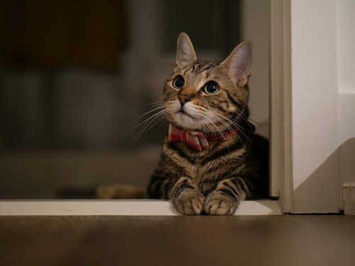

Why I prefer Cats over Dogs
I prefer cats over dogs because I think they're cuter and I like their calm personalities. Yes, dogs are very cute and can be calm as well, but cats are simply cuter and are less hyper than dogs. I also like that cats are independent and do not need as much care as dogs. They know how to take care of themselves.
Photo by River Kao on Unsplash